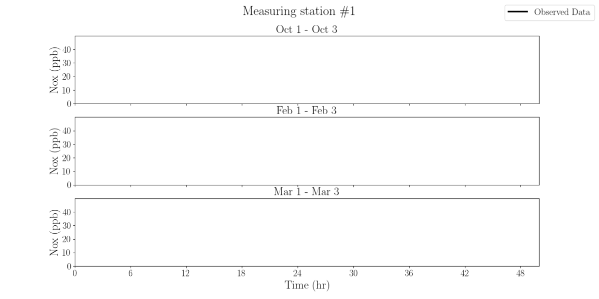

Atmospheric research in urban environment
To further improve the model forecasting skill, we should also include the chemical reactions happening within the atmosphere. As such, for the current research, we employ state-of-the-art atmospheric model (WRF-CHEM) that couples the Weather Research and Forecasting (WRF) model with chemistry to simulate the complex interactions between meteorology, atmospheric chemistry, and air quality. The model is widely used by researchers to study the impacts of air pollution on human health and the environment and to develop strategies to mitigate these impacts.

As can be seen from the animation above, there is much left to improve.
Since we come from the fluid dynamics field, it is our hypothesis that
by improving the boundary layer wind dynamics within an urban area will
yield an improvement in the overall atmospheric forecast, including
the tracers and chemicals.
Next to the wind dynamics, we will also analyze surface temperature, moisture content, and total effect of chemicals on the solar and energy budget equations. Stay tuned for further updates!
Next to the wind dynamics, we will also analyze surface temperature, moisture content, and total effect of chemicals on the solar and energy budget equations. Stay tuned for further updates!